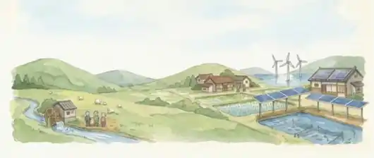

地方參與、資訊透明與利益共享
了解居民參與決策、微型集資、售電收益公開、分紅及公益回饋如何建立地方信任。
公民電廠 × 養殖現場

透過「大林公民電廠」與「高鉦台灣鯛繁殖場」兩類實務案例，了解社區參與、收益資訊公開、利益共享及養殖需求協調經驗，作為精進漁電共生環社檢核社會溝通與因應對策的參考。
了解居民參與決策、微型集資、售電收益公開、分紅及公益回饋如何建立地方信任。
了解承租養殖戶如何與地主、光電業者協商配置、施工時程及營運安排，降低生產干擾。
比較兩種場域的溝通經驗，蒐集可追蹤、可落實且適用於不同案場的環社檢核做法。
地圖標記供行程概覽；行車路徑以 Google Maps 即時導航為準。部分非官方座標依地址定位，請以現場指引為準。
透過上午與下午兩類案例的現場交流，預計整理以下三項成果，作為後續漁電共生環社檢核與社會溝通機制精進的參考。
彙整合作社的居民參與、售電收益公開、分紅規則及公益回饋作法，釐清資訊透明如何建立信任，以及可供其他案場借鏡的條件。
彙整承租養殖戶在設施配置、施工時程、養殖操作及完工復養等階段的協商與問題處理方式。
對照兩案經驗，初步辨識「參與時點、收益與回饋資訊揭露、承諾追蹤、養殖需求保障」等可納入檢核或輔導的方向，並評估不同案場的適用條件。
以上為預期蒐集與整理的成果；如順路觀察橙光備選點，可補充社區鄰近敏感位置及環社檢核後續溝通的觀察。實際成果仍依現場交流及後續查證確認。
魚塭周邊地面可能潮濕，請穿著防滑平底鞋、攜帶雨具，並依場域人員引導行走；勿自行靠近池邊或進入未開放區域。